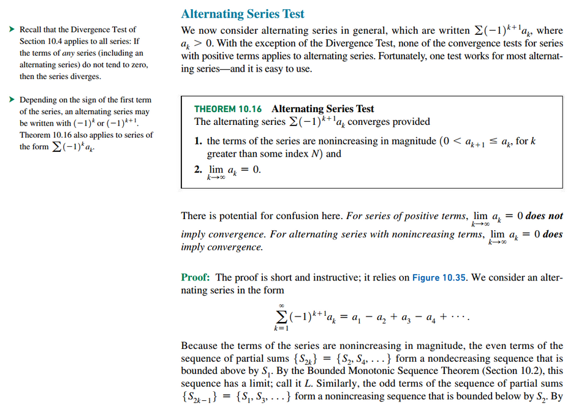
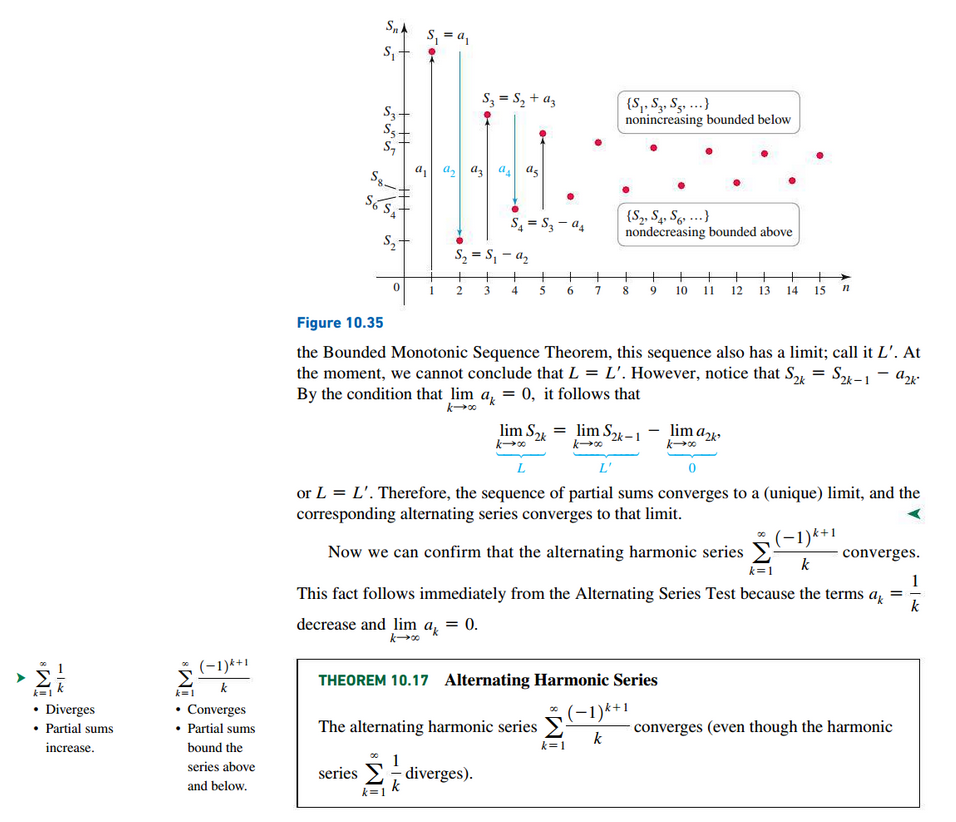
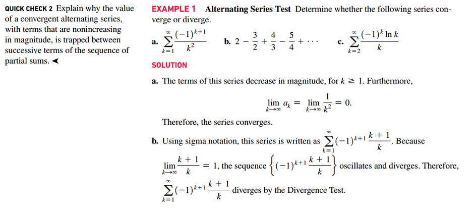
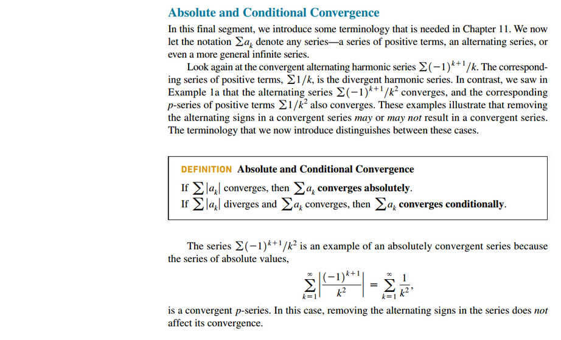
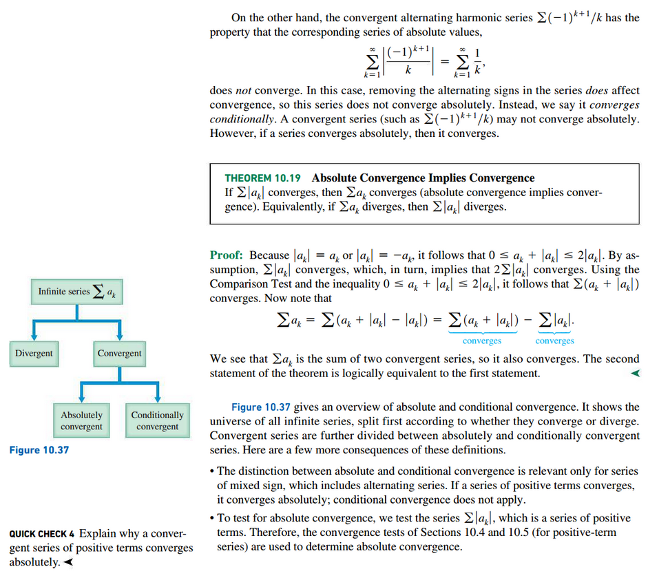
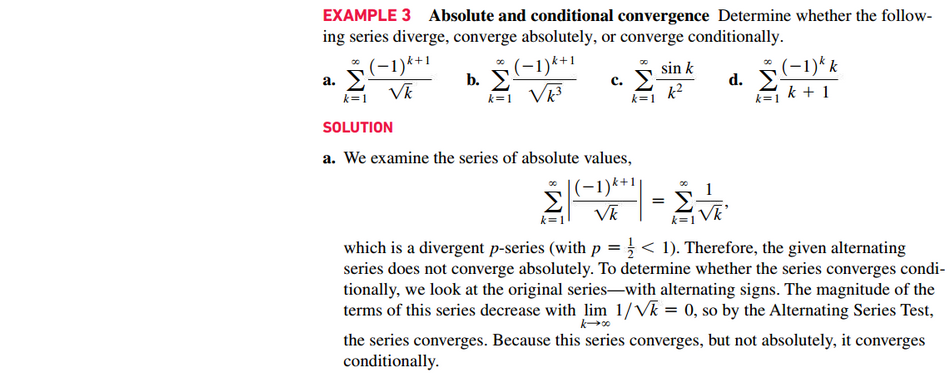
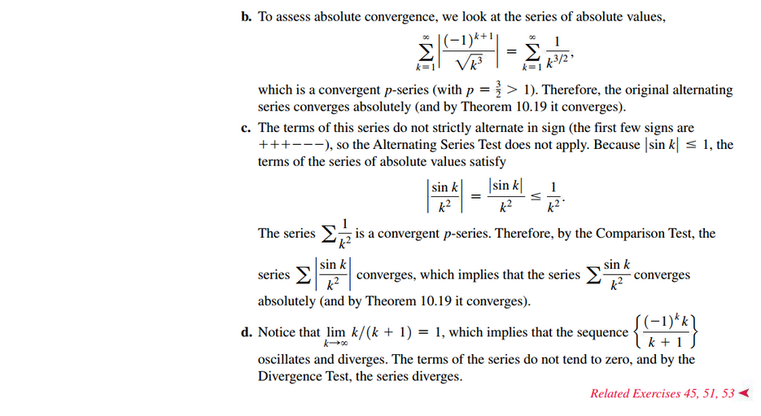

Section 10.6: Alternating Series
Alternating Harmonic Series
 
 
Remainders in Alternating Series


Absolute and Conditional Convergence
 
 
Resources
Textbook
- Calculus, Early Transcendentals 3rd Edition - Briggs, Cochran, and Gillet